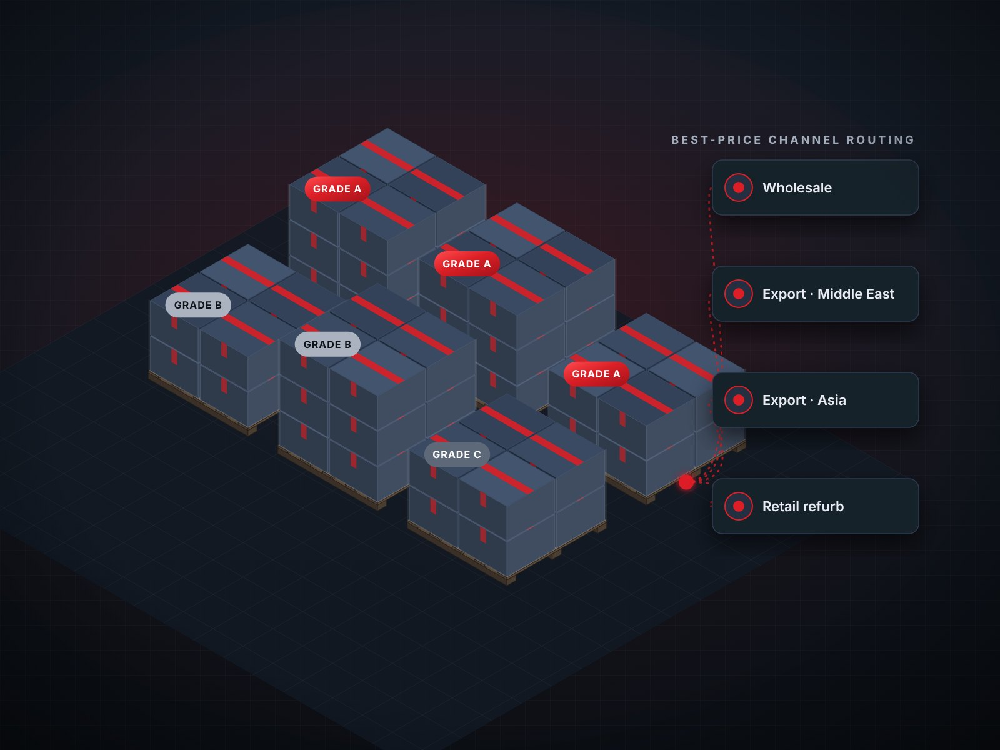
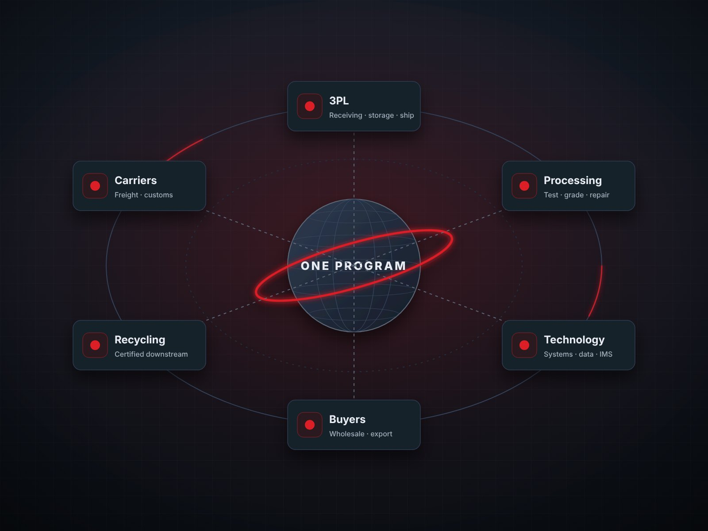

Turn recovered product into revenue.
Recovering a unit is only half the job. We help you sell it well through the right channels, buyers, and partners, and build the business around it.
Services that pick up where processing leaves off
Channel strategy
Decide which recovered product goes where (retail, wholesale, export, B2B, or parts) to maximize net recovery.
Secondary-market & export sales
Wholesale and export sales strategy that opens new markets for recovered inventory.
Buyer development
Find, qualify, and build relationships with buyers who pay for quality and volume.
Partner sourcing
3PL, processing, technology, and downstream partners matched to your volumes and requirements.
Technology integration
Connect diagnostics, grading, inventory, and sales systems so data follows every unit.
U.S. market entry
Go-to-market strategy and U.S. operations setup for international companies expanding here.
From leakage to recovered value
The same four problems show up in almost every reverse supply chain. Here’s how we close them.

photos/value-channels.jpg or .pngMore buyers. Better prices. Fewer write-downs.
Recovered product is often sold through whichever outlet is easiest, not the one that pays the most. We build channel strategies and buyer networks across the United States, United Kingdom, Middle East, and Asia, so every grade has a home and every unit has a price worth taking.
- Wholesale and export channel development
- Buyer qualification and relationship building
- Pricing strategy by grade and channel

photos/value-partners.jpg or .pngThe right partners, connected into one program
Most reverse programs depend on several outside partners. We source them, set clear expectations, and connect them, so your 3PL, processors, technology providers, and downstream buyers work as one system instead of a chain of hand-offs.
- 3PL and processing partner selection
- Technology providers and systems integration
- Downstream refurbishers, recyclers, and buyers
Ready to get more from what comes back?
Let’s talk about the product you’re recovering today and the channels that could be paying more for it.
- Channel and pricing review
- Buyer and partner introductions
- Secondary-market and export strategy
- U.S. operations setup